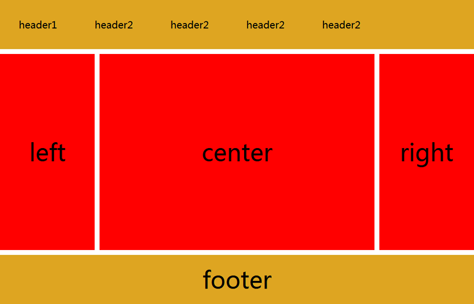
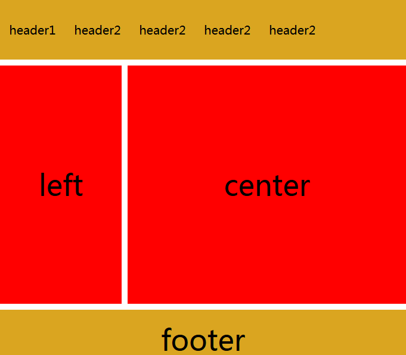
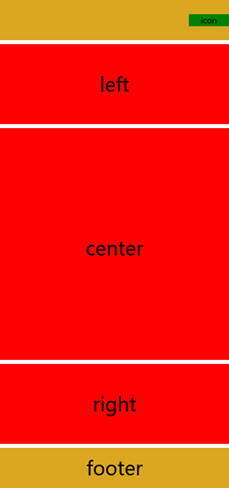

CSS响应式布局（自适应布局）教程
CSS 响应式布局也称自适应布局，是 Ethan Marcotte 在 2010 年 5 月份提出的一个概念，简单来讲就是一个网站能够兼容多个不同的终端（设备），而不是为每个终端做一个特定的版本。这个概念是为解决移动端浏览网页而诞生的。响应式布局能够为使用不同终端的用户提供很好的用户体验，而且随着大屏智能手机的普及，用“大势所趋”来形容也不为过。
要实现响应式布局，常用的方式有以下几种：
接下来我们以媒体查询为例来具体演示一下响应式布局的实现。
关于媒体查询有以下三种实现方式：
1、直接在 CSS 文件中使用，示例代码如下：
下面通过一个综合的示例来演示一下响应式布局的实现：
当浏览器窗口大于 640 像素小于 980 像素时，页面的样式如下图所示：
当浏览器窗口小于 640 像素时，页面的样式如下图所示：
要实现响应式布局，常用的方式有以下几种：
- 使用 CSS 中的媒体查询（最简单）；
- 使用 JavaScript（使用成本比较高）；
- 使用第三方开源框架（例如 bootstrap，可以很好的支持各种浏览器）。
接下来我们以媒体查询为例来具体演示一下响应式布局的实现。
设置 meta 标签
首先，我们需要设置 meta 标签来告诉浏览器，让视口（网页的可视区域）的宽度等于设备的宽度，并禁止用户对页面的缩放，如下所示：<meta name="viewport" content="width=device-width, initial-scale=1, maximum-scale=1, user-scalable=no">
在设置视口时需要注意，视口就是网页可见区域的尺寸，设置视口时只设置宽度就行，不用在乎高度，具体高度由网页内容自动撑开。上面 meta 标签中内容的含义如下：- viewport：即视口，表示网页的可视区域；
- width：控制 viewport 的大小，可以指定一个具体的值，例如 600，也可以是由关键字组成的特殊值，例如 device-width 就表示设备的宽度；
- initial-scale：表示初始缩放比例，也就是页面第一次加载时的缩放比例；
- maximum-scale：表示允许用户缩放的最大比例，范围从 0 到 10.0；
- minimum-scale：表示允许用户缩放到最小比例，范围从 0 到 10.0；
- user-scalable：表示用户是否可以手动缩放，“yes”表示允许缩放，“no”表示禁止缩放。
媒体查询
CSS 媒体查询可以根据指定的条件，针对不同的媒体类型（screen print）定义不同的 CSS 样式，让使用不同设备的用户都能得到最佳的体验。关于媒体查询有以下三种实现方式：
1、直接在 CSS 文件中使用，示例代码如下：
@media (max-width: 320px) {
/*0~320*/
body {
background: pink;
}
}
@media (min-width: 321px) and (max-width: 375px) {
/*321~768*/
body {
background: red;
}
}
@media (min-width: 376px) and (max-width: 425px) {
/*376~425*/
body {
background: yellow;
}
}
@media (min-width: 426px) and (max-width: 768px) {
/*426~768*/
body {
background: blue;
}
}
@media (min-width: 769px) {
/*769~+∞*/
body {
background: green;
}
}
2、使用 @import 导入，示例代码如下：@import 'index01.css' screen and (max-width:1024px) and (min-width:720px) @import 'index02.css' screen and (max-width:720px)3、在 link 标签中使用，示例代码如下：
<link rel="stylesheet" type="text/css" href="index01.css" media="screen and (max-width:1024px) and (min-width:720px)"/> <link rel="stylesheet" type="text/css" href="index02.css" media="screen and (max-width:720px)"/>更多关于媒体查询的介绍大家可以查阅《CSS媒体查询》一节。
下面通过一个综合的示例来演示一下响应式布局的实现：
<!DOCTYPE html>
<html>
<head>
<meta charset="UTF-8">
<title>响应式布局</title>
<meta name="viewport"content="width=device-width,initial-scale=1.0,maximum-scale=1,user-scalable=no" />
<style>
*{
margin: 0px;
padding: 0px;
font-family: "微软雅黑";
}
#head, #foot, #main
{
height: 100px;
width: 1200px;
/*width: 85%;*/
background-color: goldenrod;
text-align: center;
font-size: 48px;
line-height: 100px;
margin: 0 auto;
}
#head div{
display: none;
font-size: 20px;
height: 30px;
width: 100px;
background-color: green;
float: right;
line-height: 30px;
margin-top: 35px;
}
#head ul{
width: 80%;
}
#head ul li{
width: 20%;
float: left;
text-align: center;
list-style: none;font-size: 20px;
}
#main{
height: auto;
margin: 10px auto;
overflow: hidden;
}
.left, .center, .right{
height: 600px;
line-height: 600px;
float: left;
width: 20%;
background-color: red
}
.center{
width: 60%;
border-left: 10px solid #FFF;
border-right: 10px solid #FFF;
box-sizing: border-box;
}
@media only screen and (max-width: 1200px) {
#head, #foot, #main{
width: 100%;
}
}
@media only screen and (max-width: 980px) {
.right{
display: none;
}
.left{
width: 30%;
}
.center{
width: 70%;
border-right: hidden;
}
}
@media only screen and (max-width: 640px) {
.left, .center, .right{
width: 100%;
display: block;
height: 200px;
line-height: 200px;
}
.center{
border: hidden;
border-top: 10px solid #FFFFFF;
border-bottom: 10px solid #FFFFFF;
height: 600px;
line-height: 600px;
}
#head ul{
display: none;
}
#head div{
display: block;
}
}
</style>
</head>
<body>
<div>
<header id="head">
<ul>
<li>header1</li>
<li>header2</li>
<li>header2</li>
<li>header2</li>
<li>header2</li>
</ul>
<div>icon</div>
</header>
<section id="main">
<div class="left">
left
</div>
<div class="center">
center
</div>
<div class="right">
right
</div>
</section>
<footer id="foot">
footer
</footer>
</div>
</body>
</html>
当浏览器窗口小于 1200 像素大于 980 像素时，页面的样式如下图所示：

当浏览器窗口大于 640 像素小于 980 像素时，页面的样式如下图所示：

当浏览器窗口小于 640 像素时，页面的样式如下图所示：

关注公众号「站长严长生」，在手机上阅读所有教程，随时随地都能学习。内含一款搜索神器，免费下载全网书籍和视频。

微信扫码关注公众号